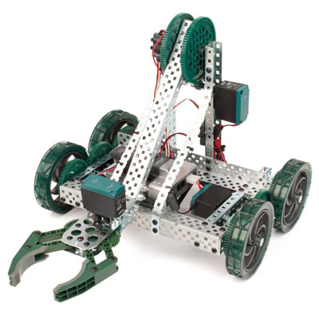
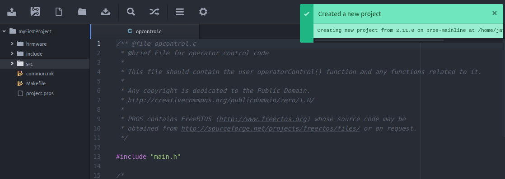
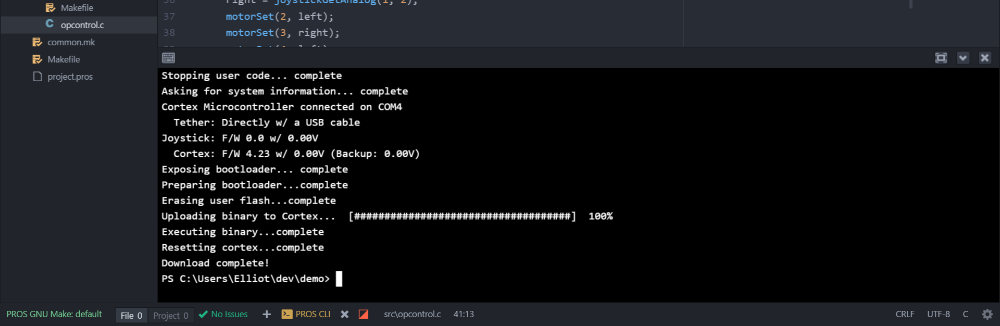

Clawbot Tutorial¶
Objective:¶
This tutorial will guide you through basic programming of the VEX Clawbot.
Intended Audience:¶
This tutorial is intended for developers with some programming experience, but with little to no experience with the PROS library. If you haven’t programmed before, we recommend checking out all the “Introduction and Basic C Features” sections of this tutorial series; you may also benefit from the “Pointers, Arrays and Strings” sections as well (although they aren’t as pertinent).
Goals:¶
At the end of this tutorial you will have:
- Understood the basic project structure of PROS
- Programmed a basic chassis with “tank” control or “arcade” control
- Programmed buttons to control the clawbot’s lift
- Programmed a joystick axis to control the clawbot’s claw
- Understood the standard subsystem module methodology
- Programmed a dead-reckoned autonomous routine
Here’s the robot we’ll be programming:
For the purposes of this tutorial, we’ve plugged in our motors into the following ports:
| Port | Description | Port | Description |
|---|---|---|---|
| 1 | 6 | ||
| 2 | Left wheels | 7 | |
| 3 | Right wheels | 8 | Lift |
| 4 | 9 | Claw | |
| 5 | 10 |
We modified our clawbot to include a quadrature encoder on the lift arm. We plugged the top and bottom ports into digital ports 2 and 3, respectively.
With Atom started, you can create a new PROS project by clicking the
PROS menu, then click Create new Project.
Create a directory that you’d like to keep the source files for your
Clawbot project. We’re creating ours in C:\Users\Elliot\dev\Clawbot.
Pick a directory to create the new project in and click Create. The PROS CLI will now copy the latest kernel template into the specified directory and Atom will open it.
PROS Project Structure¶
When you create your project, PROS will copy all of the files necessary to build your project. The structure of the project looks like:
project
│ project.pros (used by PROS CLI to know kernel version and other metadata)
│ Makefile (instructs make how to compile your project)
| common.mk (helper file for Makefile)
│
└───src (source files should go here)
│ │ auto.c (source for autonomous function)
│ │ init.c (source for initialization)
│ │ opcontrol.c (source for operator control)
│ │ Makefile (instructs make how to compile your source files)
|
└───include (Header files should go in here)
│ │ API.h (Lets source files know PROS API functions)
│ │ main.h (Includes API.h and anything else you want to include project-wide)
│
└───firmware
│ cortex.ld (Instructs the linker how to construct binaries for the Cortex)
│ libpros.a (Pre-compiled PROS library)
| STM32F10x.ld (Instructs the linker how to construct binaries for the Cortex)
| uniflash.jar (Legacy flashing utility built w/Java)
Note
By convention, the opcontrol(), autonomous(), and initialize functions are separated into separate files (opcontrol.c, auto.c, and init.c). They could be all in the same file, but it can be helpful to organize your functions into multiple files to keep things from becoming messy.
Arcade Control¶
Let’s begin by writing a basic “arcade” control for the clawbot. In
arcade control, the vertical joystick values control the
forward/backward speed of the robot and the horizontal joystick values
control the rotation of the robot. Atom will open src/opcontrol.c
for you when you create a project, but if it is not open then you will
need to open it by navigating the directory tree on the left panel.
The template opcontrol.c file contains a simple infinite loop and
documentation to help remind you what opcontrol() does.
PROS offers functions to perform common tasks associated with programming robotics. To program basic arcade functionality, we need to be aware of two functions: one to get the joystick input and one to set the motors to a speed.
int joystickGetAnalog ( unsigned char joystick, // the joystick slot to check (1 for master, 2 for partner)
unsigned char axis // One of the joystick channels on a VEX Joystick: 1, 2, 3, 4, ACCEL_X, or ACCEL_Y
);
Gets the value of a control axis on the VEX joystick. *Returns the value from -127 to 127, or 0 if no joystick is connected to the requested slot.s
void motorSet ( unsigned char channel, // motor channel to set from 1-10
int speed // new signed speed. -127 is full reverse, 127 full forward, 0 off
);
Sets the speed of the specified motor channel.
Armed with knowledge of these functions, let’s modify opcontrol():
void operatorControl() {
int power;
int turn;
while (1) {
power = joystickGetAnalog(1, 2); // vertical axis on left joystick
turn = joystickGetAnalog(1, 1); // horizontal axis on left joystick
motorSet(2, power + turn); // set left wheels
motorSet(3, power - turn); // set right wheels
delay(20);
}
}
Note
It’s considered good practice to comment your code. Commenting can make it easier to understand the original intention of code when you have to look back on it months later in the middle of the competition and everything’s broken.
Your code should tell the story of what you are doing; your comments should tell the story of why you are doing it. (Source: http://stackoverflow.com/a/142869)
Compilation¶
Next, you will need to compile your project. Compilation converts your code into instructions the Cortex can understand. There are typically four stages to compilation. The following paragraphs explain abstract complicated technical systems. This introduction to compilation is intended to give some justification for the compilation process, but is by no means complete. This information is not necessary to program with PROS, but may be helpful for some.
- Preprocessing
Lines starting with a # are interpreted by the preprocessor as
commands. These commands can include other pieces of files
(#include), execute basic macro logic (#ifdef), replace text
(#define), and more. The goal of preprocessing is to reduce
duplicated code.
For instance, to call the PROS API, all of the function declarations
need to go in the source file. Using a header file can simplify this
operation by writing all of the function declarations in one place, and
just #include-ing it to reference those function declarations.
- Compilation
The next stage of compilation is to translate preprocessed code into assembly instructions that the ARM Cortex-M3 processor can almost understand. Assembly code is human readable and reasonably converted into a language that the processor can understand.
- Assembly
The assembler translates assembly instructions directly into machine code (called object code or objects). These files aren’t considered human readable and can be interpreted by the processor directly.
- Linking
The final stage of compilation is linking. Objects contain pieces of machine instructions, but may not be complete. For instance, when compiling your source files, the PROS API are not directly incorporated into your object code (merely references to the PROS API functions, as specified by the function declarations). The Linker will incorporate and rearrange all the difference object files (and libraries) into one file that can be interpreted by the processor.
To compile code within Atom, press Ctrl + Shift + P to
bring up the Command Palette. You can start typing the command you wish
to execute, “Build: Trigger”. You should also notice that it will
display the available shortcut keys to execute the command. By default,
triggering a build can be done by pressing
Ctrl + Alt + B (⌘ + Alt + B) or F9.
If you have unsaved files, Build will prompt you to save those files.
You should always save before building.
Uploading Code to the Cortex¶
Now that you have compiled a binary file that the Cortex can understand,
you need to upload it to the microcontroller. Within Atom, click the
‘Upload to Cortex’ button in Atom. This process will upload the binary
the compilation process created (bin/output.bin) to the Cortex and
begin running it.
If you followed these instructions correctly, you can connect a joystick to the clawbot and drive it using arcade controls!
Subsystem Module Methodology¶
In this section, we’ll introduce the subsystem module methodology. When
developing code for complicated robotic systems, it’s extremely helpful
to abstract away the necessary steps to perform actions on a system. For
instance, to set the speed of a 4 motor chassis, you may need to set the
speed of the front left motor, the rear left motor, and so on. You might
just have four motorSet() calls every time you want to set robot’s
speed, but what happens when you add another pair of motors to your
chassis, or collapse your left and right sides onto two Y-cables? You
would need to comb through all of your code to find all of the times you
set the chassis speeds and adjust those calls accordingly. Similarly,
you may want a level of abstraction for getting sensor values - what
happens if you decide to switch from quadrature encoders to integrated
motor encoders?
Writing a function such as chassisSet() can help mitigate this
problem. Additionally, you cannot write your chassisSet() function
in multiple source files, so you need to create a single source file and
be able to incorporate it with opcontrol.c, init.c, and
auto.c. The subsystem module methodology is a standard way of
organizing these sorts of functions. We define a subsystem as a major
component of a robot: chassis, lift, intake, and claw are some common
subsystems. We’ll write our abstracted subsystem functions in a file
like src/chassis.c and put our function declarations in
include/chassis.h so that way we can call our new functions.
Let’s modify our existing operator control to use the subsystem
methodology. We’ll begin by creating the header file containing our
function declarations. You can create a new file in the include
directory by right clicking include and clicking “New File”. We’ll
name our file chassis.h. A new empty file is created for us. Header
files contain declarations, but not typically definitions. They are a
way to describe what resources are available to you.
Your own header files contain declarations for interfaces between the source files of your program. Each time you have a group of related declarations and macro definitions all or most of which are needed in several different source files, it is a good idea to create a header file for them. (`GNU <https://gcc.gnu.org/onlinedocs/cpp/Header-Files.html>`__)
#ifndef _CHASSIS_H_
#define _CHASSIS_H_
// Sets the speeds of the left and right wheels of the chassis
void chassisSet(int left, int right);
#endif // _CHASSIS_H_
#include "main.h" // includes API.h and other headers
#include "chassis.h" // redundant, but ensures that the corresponding header file (chassis.h) is included
void chassisSet(int left, int right) {
motorSet(2, left);
motorSet(3, right);
}
Using this methodology, we can rewrite our operator control to something much more concise:
#include "main.h"
#include "chassis.h"
void opcontrol() {
while(1) {
int power, turn;
while (1) {
power = joystickGetAnalog(1, 2); // vertical axis on left joystick
turn = joystickGetAnalog(1, 1); // horizontal axis on left joystick
chassisSet(power + turn, power - turn);
delay(20);
}
}
}
It should be clear that congregating similar pieces of code into a C source file and a header file for other source files simplifies and organizes your code.
Note
You can modify main.h and
include your own header files. In our example, we could modify our
main.h to look like the following:
// top of main.h omitted
#ifndef MAIN_H_
// This prevents multiple inclusion, which isn't bad for this file but is good practice
#define MAIN_H_
#include <API.h>
#include "chassis.h" // Added this line
// rest of main.h omitted from this listing
Then, in opcontrol.c, the only file we would need to #include is
main.h. In future source files, we would only ever need to
#include "main.h" in order to get access to all of our robot’s
subsystems’ functions!
Programming the VEX Claw¶
We now want to use the left horizontal joystick to control the aperture of the claw. We’ll continue using the modular methodology:
include/claw.h:
#ifndef *CLAW_H*
#define *CLAW_H*
void clawSet(int speed);
#endif
src/claw.c:
#include "main.h"
#include "claw.h"
void clawSet(int speed) { motorSet(9, -speed); }
src/opcontrol.c:
#include "main.h"
void operatorControl() {
int power, turn;
while (1) {
power = joystickGetAnalog(1, 2); // vertical axis on left joystick
turn = joystickGetAnalog(1, 1); // horizontal axis on left joystick
chassisSet(power + turn, power - turn);
// add the following line:
clawSet(joystickGetAnalog(1, 4));
delay(20);
}
}
Controlling the Lift¶
Our drivers requested that they be able to use the trigger buttons to control the lift. At this point, complete the lift submodule on your own just like we did for the chassis and claw. If you’re having trouble, take a look at the complete Clawbot code sample at the bottom of this page.
src/opcontrol.c:
#include "main.h"
void operatorControl() {
int power, turn;
while (1) {
power = joystickGetAnalog(1, 2); // vertical axis on left joystick
turn = joystickGetAnalog(1, 1); // horizontal axis on left joystick
chassisSet(power + turn, power - turn);
clawSet(joystickGetAnalog(1, 4));
// add the following logic:
if(joystickGetDigital(1, 6, JOY_UP)) {
liftSet(127); // pressing up, so lift should go up
}
else if(joystickGetDigital(1, 6, JOY_DOWN)) {
liftSet(-127); // pressing down, so lift should go down
}
else {
liftSet(0); // no buttons are pressed, stop the lift
}
delay(20);
}
}
Depending on your motor, you may notice that the arm falls back down when stopped mid-raise. This can be alleviated by applying some power to the motor when no buttons are pressed (instead of 0), or by using a feedback control system such as PID.
-Congratulations, you have completed your first PROS program!